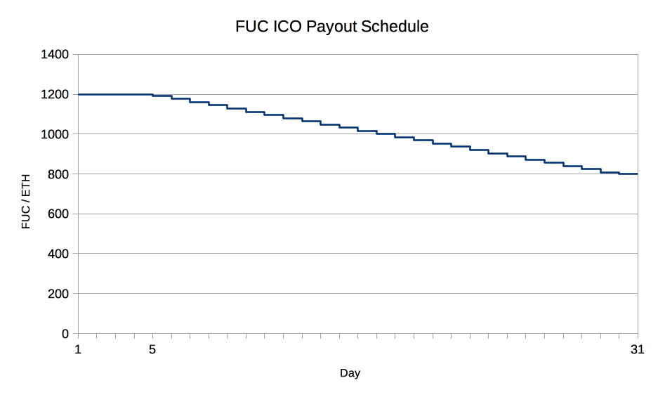

We propose a means of monetizing societal rage; a daily, recurring auction allowing participants to voice their angry opinions. A simple, ascending-price auction is held daily, and the winner is given a platform to broadcast a message of their choosing via a high-profile channel. Proceeds from the auction are paid out to coin-holders as a daily dividend.
Marshall McLuhan once postulated that "all forms of violence are quests for identity". When we, as humans, feel our identities threatened, we instinctually lash out to reassert our sense of selves.
In modern times, the means of asserting our agency has branched out from mainly physical forms of demonstration, to mainly the realm of the verbal. Not only is it more resource efficient to use verbal communication to assert ourselves, its often more effective.
In the social media era, everyone has been given an online presence. The proliferation of content-generation tools has, on one hand, made it easier than ever to send messages out with a global reach. Unfortunately, its also resulted in a sea of content that makes it nearly impossible to have messages actually heard over the cacophony of voices. There is simply too much noise in proportion to any one person's signal.
What is left is a burning desire for individuals to be heard, on a high-profile channel. And in our global village, where opinions naturally differ and abrasive situations present themselves, people desire a platform to say.... fuck you.
The FuckYou network is centered around a daily auction for exclusive digital real estate. Participants bid for access to the FuckYou.eth homepage and associated message distribution channels. We expect FuckYou.eth to become the frontpage fuck-you of the internet.
All collected ether proceeds from the auction process are paid into a beneficiary account. The beneficiary, the FuckYouCoin contract, can withdraw all beneficiary funds into its own account. The coin contract, in turn, divvies out all funds sent to it to the coinholders.
There are three main functions that users of the auction will use: bid,
resetAuction, and withdraw.
When a participant creates a bid, all elements of the bid are required upfront,
including their message to publish, with all elements being encoded at
the time of bid, rather than at a later stage.
A bid in the FuckYouAuction consists of a bidder, amount,
donationAddress, and message.
The bidder is the address of the participant, the amount is the total number
of wei (the smallest denomination of ether) to bid, the donationAddress is an Ethereum address to be published upon
winning the auction, the message is, at the UI level, a 128 byte length UTF-8
string, at the contract level, 4 32 byte UTF-8 strings to also be published upon
winning the auction.
When the auction time has expired, the auction becomes open for reset.
The auction then requires an explicit resetAuction call or a new bid.
In this case, the bid call will perform an implicit resetAuction.
Whenever an auction participant is outbid with a higher amount, the participant
is able to retrieve 99% of their losing bid through a withdraw call. The 1%
remaining is added to the beneficiary fund.
Historical Auction View - A way to easily access previous auction results through the FuckYou website. This view will make winning auctions much more valuable, as participants' messages will be accessible and enshrined on the site forever.
Twitter Bot - A public Twitter account tweeting all action from the FuckYou network, as well as software to run your own bot. This will allow participants' messages to reach a much wider audience through a means-tested platform. Having public bot software also allows messages to continue to be broadcast even in the event of Twitter censorship against the official FuckYouDotEth account.
Public API - A public REST API to interact with the FuckYou network, as well as software to run your own API service. A public API paves the way for traditional webapps to access the FuckYou network without needing specialized Ethereum software.
Mobile Apps - Android and iOS apps to interact with the FuckYou network.
Tor Hidden Service - A publicly accessible Tor hidden service website for accessing the FuckYou API and website. This opens the doors for use of the FuckYou network for whistleblower and leaker applications. Any users desiring to remain anonymous can use our Tor hidden service to do so.
Since the project runs entirely on Ethereum, the token creation process will be organized entirely by smart contracts on its network. Participants willing to buy FuckYouCoins (FUCs) can do so by sending ether to the designated address. By doing so, they create FUCs at a rate of between 1200 to 800 FUCs per 1 ETH.
The crowdfunding will take place over the course of 30 days, starting after 2 weeks of the FuckYou network's operation. Early ICO participants will receive 1200 FUCs per 1 ETH for the first ~5 days (where a day = 4800 blocks) of the crowdsale, and for the next 25 days, the rate will drop by 16 FUC/ETH daily until it reaches 800 FUC/ETH for the final day of the ICO.

| FUC created per 1 ETH | 1200-800 FUC |
| Maximum ETH | 10 000 ETH |
| % of tokens for crowdfunding participants | 80% |
| % of tokens for FUC team | 20% |
| Approximate date of start | 01-07-2017, 1pm GMT |
| Approximate date of end | 01-08-2017, 1pm GMT |
| Maximum number of FUC created | 14 400 000 FUC |
| for crowdfunding participants | 12 000 000 FUC |
| for FUC team | 2 200 000 FUC |